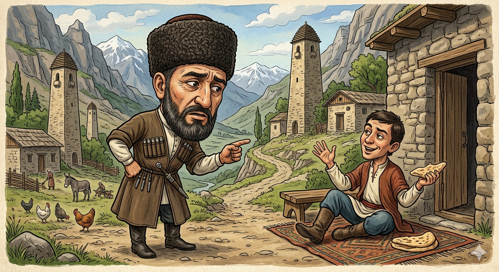

И.А. Дахкильгов. Хьехаме дувцарш - поучительные рассказы-притчи.
И.А. Дахкильгов. Хьехаме дувцарш - поучительные рассказы-притчи. Из ингушского фольклора.

Ӏа се лозабайтар кхер со
Корта метта зерате ухаш хиннаб, хийттад цо: - Фу хьал да хьа, миштад хьа Ӏер? - Мерзачох, хьаьначох мотт тохаш, чам бовзаш, дижар-гӀаттар кӀаьда, дӀайха долаш ба со, - аьннад метто. - Ӏа со, хаттараш а ца деш, бутаре. - Хьо безаш хьо болча ахац со. Ӏа хьашдоацар а дийца, сайна хӀама кхетар кхер со, - аьннад керто.
РУССКИЙ
Я боюсь, что из-за тебя мне влетит
Голова часто навещала язык и расспрашивала его: - Как поживаешь? Как твои дела? - Хорошо живу. Ем сладко и сытно, сплю в тепле и удобстве, - отвечал язык, - вот только ты докучаешь мне своими расспросами... - Ты думаешь, я навещаю тебя из любви? - не сдержалась голова. - Я пытаюсь ублажать тебя потому, что ты ненароком взболтнешь чего не надо, а бить за это будут не тебя, а меня.
ENGLISH
I'm afraid I'll get into trouble because of you
The head often visited the tongue and asked it, 'How are you getting on? How are things?" "I'm living well. I eat sweet, hearty food and sleep in warmth and comfort,' the tongue replied. 'It's just that you're getting on my nerves with all your questions.' 'Do you think I visit you out of love?' the head asked. "I'm trying to appease you because you might accidentally say something you shouldn't, and I'll be the one who gets punished for it."
НОХЧИЙН
Ахь со ловзабайтар кхоьру со
Корта меттан зерате оьхуш хилла, хиттина цо: - ХӀун хьал ду хьох, муха ду хьан Ӏер? - Мерзачух, хьеначух мотт тухуш, чам боккхуш, дижар-гӀаттар кӀеда, довха боллуш бу со, - аьлла матто, - ахь со, хаттарш а ца деш, битхьар. - Хьо безаш хьо болче эхац со. Ахь хьаштдоцург а дийцина, сайна хӀума кхетарна кхоьру со, - аьлла коьрто.
ПОГОВОРКИ
Аьттув боацчара юха а ваьле, хьай аьттув лаха. - Отступись от того, чего не одолеешь (не победишь), и начни искать свою удачу.БӀехача дагара хьагӀ йоагӀа, цӀенача дагара яхь йоагӀа. - Из черного сердца – черная зависть, из чистого сердца – благородное соперничество.Дарбашка даьнна дегӀ пайданна доацача даьннад. - Тело, приученное к лекарствам, никуда не годится.Лела ховчоа оттадаь шу а долаш, ца ховчоа къахьа сим а болаш да ер дуне. - Для умеющего вертеться этот мир – накрытый стол, а для не умеющего – горькая желчь.Цкъа сийдоацача ваьннар цӀаккха а сий долаш хургвац. - Единожды совершивший бесчестный поступок, уже никогда не будет в чести.Юхь тӀара хьатара вар аьнна, дог цӀена долаш а хул; юхьа кӀай вар аьнна, дог Ӏаьржа долаш а хул. - Бывает: лицом смуглый, а сердцем чистый; лицом белый, а сердцем черный.Дешар – заман къулба (тур). - Учение – компас (меч) эпохи.Пайда бац фуа чу чо лехарах. - Бесполезно в яйце искать волос.Хам ца бича, хӀама карара доал. - Если не бережешь, все из рук уходит.Эзди воацачунца леладе эздел, - цундухьа а доацаш хьайдухьа леладе. - Веди себя благородно и с неблагородным – не ради него, а ради себя.ХӀама ховр – нахага ладийгӀар. - Мудрый тот, кто слушает людей.